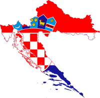

ANALIZA SPLITSKOG POŽARA IZ 2017-te GODINE
O PROJEKTU
home
compare
Corine Land Cover (CLC)
111 - Cjelovita gradska
područja
112 - Nepovezana gradska
područja
121 - Industrijski ili
komercijalni objekti
122 - Cestovna i željeznička
mreža i pripadajuće zemljište
123 - Lučke površine
124 - Zračne luke
131 - Mjesta eksploatacije
mineralnih sirovina
132 - Odlagališta otpada
133 - Gradilišta
141 - Zelene gradske
površine
142 - Športsko rekreacijske
površine
211 - Nenavodnjavano
obradivo zemljište
212 - Trajno navodnjavano
zemljište
221 - Vinogradi
222 - Voćnjaci
223 - Maslinici
231 - Pašnjaci
241 - Jednogodišnji usjevi
u zajednici s višegodišnjim
nasadima
242 - Mozaik poljoprivrednih
površina
243 - Pretežno
poljoprivredno zemljište, sa
značajnim udjelom prirodnog
biljnog pokrova
311 - Bjelogorična šuma
312 - Crnogorična šuma
313 - Mješovita šuma
321 - Prirodni travnjaci
322 - Kontinentalna grmolika
vegetacija(vrištine, cretovi
i niske šikare
323 - Mediteranska grmolika
vegetacija (sklerofilna)
324 - Sukcesija šume
(zemljišta u zarastanju)
331 - Plaže, dine i pijesci
332 - Gole stijene
333 - Područja s oskudnom
vegetacijom
334 - Opožarena područja
411 - Kopnene močvare
422 - Solane
324 - Područja plimnog
utjecaja
511 - Vodotoci
512 - Vodna tijela
521 - Obalne lagune
Jačina izgorenosti
Slabo opožareno
Srednje opožareno
Srednje jako opožareno
Jako opožareno
Šumski pokrov
Bjelogorična šuma
Crnogorična šuma
assessment
disabled_by_default
m²
Površina
Opožarena površina
Slabo opožareno
Srednje opožareno
Srednje jako opožareno
Jako opožareno
Bjelogorica pokrov
Bjelogorica izgoreno
Crnogorica pokrov
Crnogorica izgoreno
CLC 2012
CLC 2018